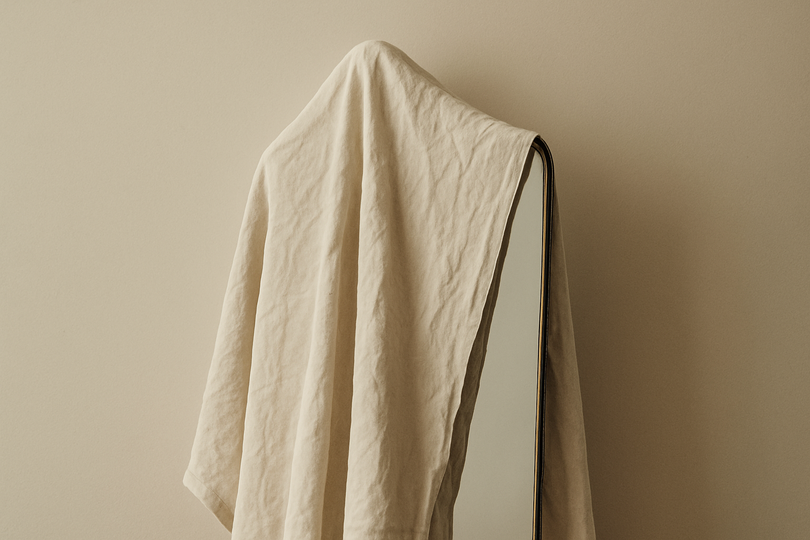
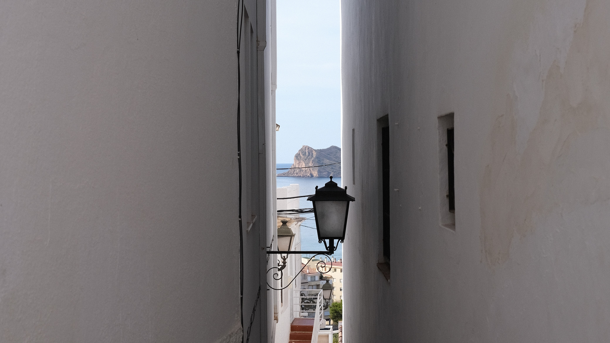
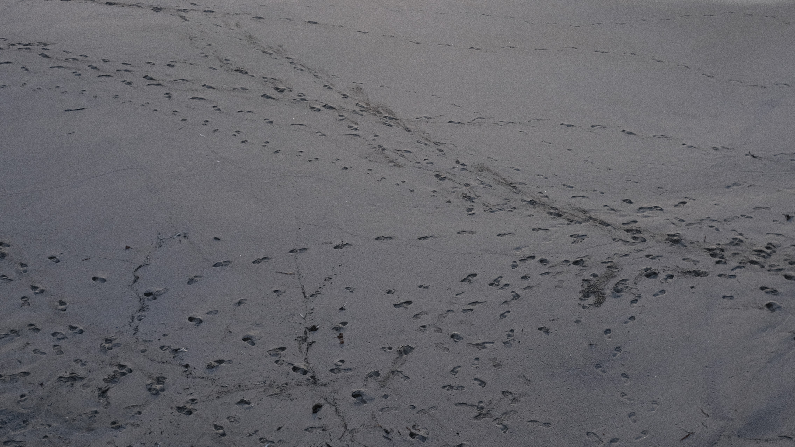
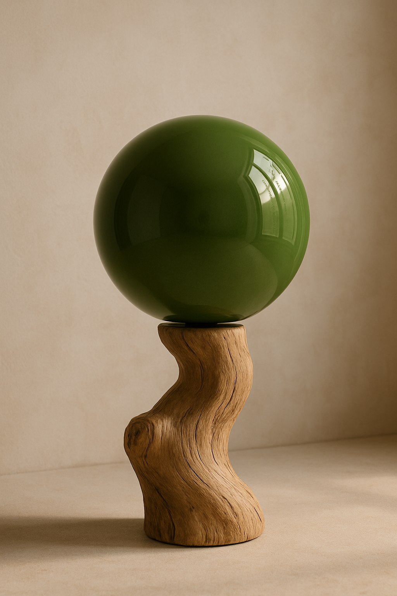
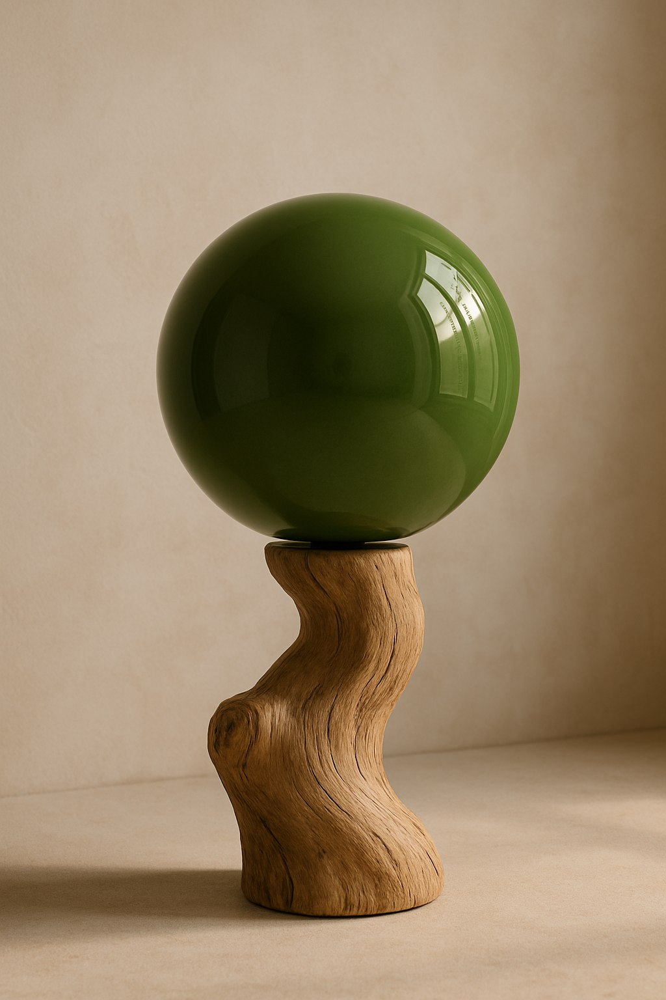
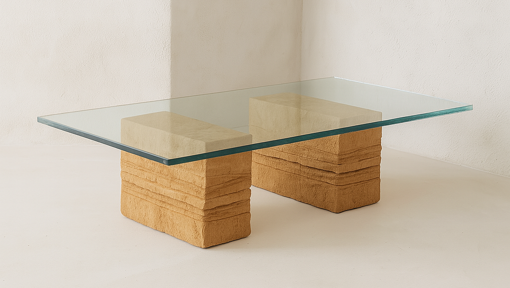
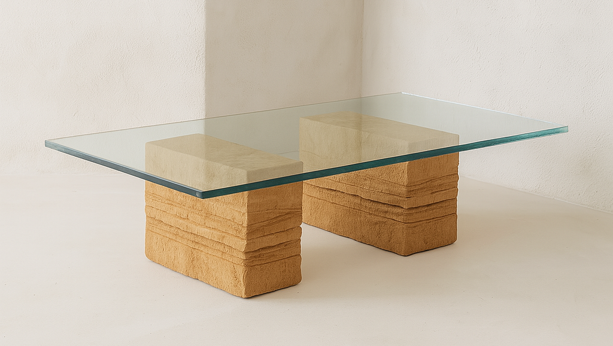

Vivir sin espectadores: la intimidad como resistencia
¿Fuiste a ese concierto si no publicaste al menos un vídeo de su canción más mítica? ¿Se casaron tus amigos si no subiste una foto del cáterin? ¿Cumplió años tu abuelo si no le felicitaste en tu perfil? ¿Fuiste feliz si no te mostraste sonriendo? ¿Tu trabajo te hace sentir bien sin añadir adjetivos anglosajones que lo hagan parecer más complicado en plataformas laborales?
Leer más →

Hay que saber más cosas
¿Se puede querer a alguien que no te genera curiosidad o que no te empuja a cuestionar? Una vez alguien astuto me dijo que le impedía conectar la ausencia de preguntas en el otro. (...) Se esconde un gran placer en preguntarse por alguien o en sentirse averiguado. Pensándolo bien: las personas a las que más he querido son aquellas con las que siempre he deseado seguir hablando.
Leer más →

La muerte de al lado
Mucho antes de una gran barbarie tiene lugar un click mucho más pequeño en nosotros mismos. Una desconexión sutil, silenciosa y corrosiva. Dejamos de mirarnos los unos a los otros, olvidamos agradecer, evitamos que lo vulnerable se vea, invalidamos el sufrimiento —propio y ajeno—, negamos la existencia de la ética para no sentirnos culpables y dejamos de pedir perdón a quien dañamos.
Leer más →
 


 
